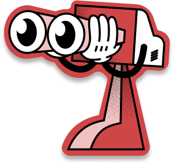

PENYULUHAN BAHAYA SEKS BEBAS

Tau gak sih kamu? bahwa seks bebas itu sangat bahaya buat tubuh kamu, karena seks bebas selain merusak pola pikir kamu dan mental kamu, dia juga bisa merusak tubuh kamu loh (jahat banget yah). Nah maka dari itu, kamu harus hindari yang namanya seks bebas yaa. Mulai dari mana sih harus memulai? Nah.. Berikut adalah beberapa tips sederhana supaya kamu bisa terhindari dari perilaku seks bebas:
1. Selektif dalam memilih teman

2. Berpendirian Kokoh

3. Perbanyak Kegiatan Positif

PENYALAHGUNAAN DIGITAL TERHADAP SEKS BEBAS
Salah satu dampak negatif yang ditimbukan dari penggunaan media sosial adalah seks bebas. Sebagian besar remaja melakukan perilaku seksual pranikah pertama kali yaitu pada saat usia Sekolah Menengah Atas atau sederajat yaitu pada usia 15- 18 tahun. Dampak negatif yang dilakukan setelah perilaku seksual pranikah diantaranya adalah Kehamilan Tidak Diinginkan (KTD), aborsi, hingga penyakit menular seksual lainnya.
Tutup